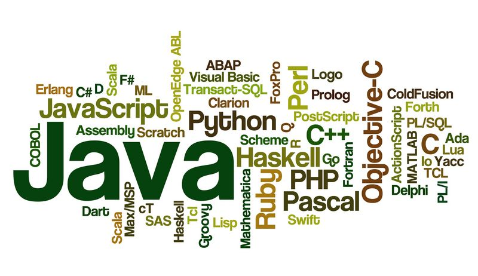
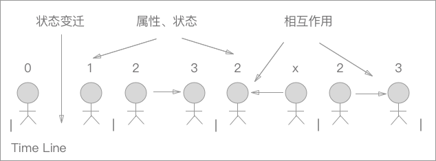
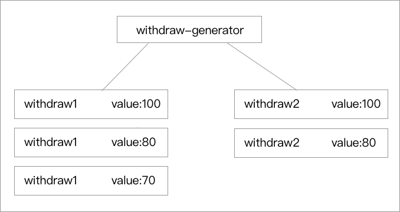
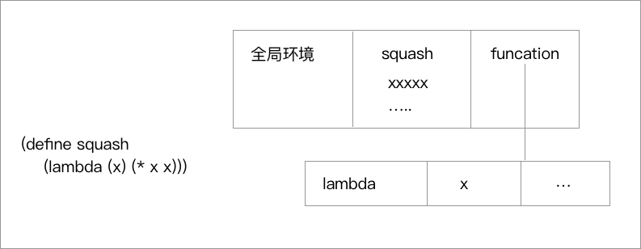
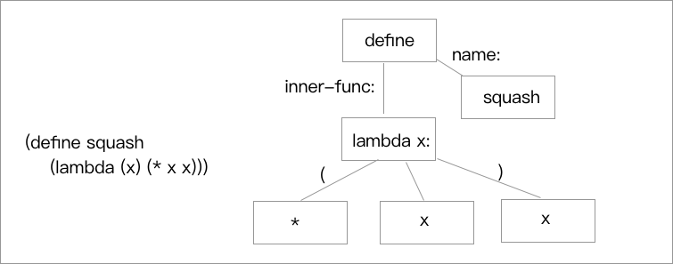
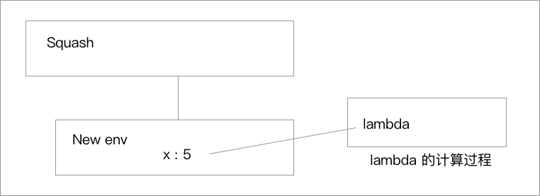

现在我们终于到了 SICP 的第三章的内容了。就个人而言我觉得 SICP 的前三章都在着眼于构建各种层次的抽象系统，三章以后的内容才是 SICP 本身比较精髓和有趣的内容了。但是万丈高楼平地起，正是之前的这些和 “抽象”、“思想” 有关的东西构建了我们在后几章学到的解释器系统。
前两章我们见识到了 Scheme 在两个主要方向上的抽象能力。我们在第一章中学到了和过程抽象有关系的知识，我们把他认定为 Scheme 系统的第一公民，看到了各种高阶函数组合起来的魅力。在第二章我们主要讨论的问题是如何进行数据抽象，从一个 “有理数” 的 Demo 入手，建立了抽象屏蔽的系统层次，我们还引入了符号数据，进一步提升了运算的抽象层次，求导等写起来很麻烦的程序都可以借助符号数据来轻松实现。之后我们还见到了通过 dispatch 使用过程保存了对象的状态，学到了使用消息传递的构建方式，等等很多的和 “抽象” 有关的知识。
我们确实通过以上的知识，在上一节末构建了一个通用操作的复数系统。但是对于一个更为拟真、更为复杂的系统的时候，以上或是计算、或是对模型抽象的知识就显得远远不足了。我们还应该需要一系列模式或者是说原则去规定去构建这整个系统。换句话说，我们要学习如何去模拟这个世界。

模拟真实世界？
很多语言的设计者或是系统的实现者一直致力于让某种编程语言实现的系统去拟真现实世界，从中诞生了很多相关的思想和技术，OOP、OOC 还有各种设计模式都是这种努力的产出。另外很多语言也在致力于语法语义化，试图让编程语言 “看起来” 更像自然语言。
我们如何模拟世界
我们在学习很多 OOP 的语言的时候，都会讲很多 OOP 设计的好处，其中几个优点都有类似的特点，就是说 OOP 实际上是对现实世界的一种模拟，从开发人员的角度来说编写容易思考，而且从系统实现上也比较贴近现实。
在实现中我们可以从这两个角度去实现：
- 我们把现实中的每一种实体抽象为一个对应的程序对象（当然还可能会提取出对对象的抽象：类）
- 把每个现实中实现的具体方法模拟为一个程序中对应的活动。
通过对 “对象” 和 “活动” 的拟真，我们就可以用程序去对现实世界进行模拟。
我们遇到了一些问题
可以通过上面的两条去完成从现实到程序的一种转化。但是我们明显发现了一些问题，因为现实世界纷繁复杂，每时每刻的每个实体都在发生着不同的变化，而且每个实体都在发生着不同的动作，相互之间还有大量的交互，如果全部用程序去实现和模拟难以实现。
因而我们希望在程序在具体的实现之中，不要有大范围的甚至是全局的数据变化（这不好管理），我们希望把对象的增删修改、活动的产生消亡限定在一个有限的局部内。这样我们的整个系统会被分为不同的小的部分和结构，我们就把整个系统进行了分解的操作。
高内聚和低耦合
高内聚和低耦合是我们经常听到的设计方式，这样一个使用
模块化的方式，其实是对这种设计思路的一种实践。高内聚是在说模块内聚化，功能内聚在对象之中，只留出相应的接口，使用接口进行交互，降低模块相互的耦合。
对象的世界
从 对象 的角度上来看，世界是什么样子的呢？对象的世界本质上是由一大堆对象组成的，对象有自己的属性和状态，随着时间的流逝，对象有一系列的状态的变迁。为此我们要通过一种方式去记录这个状态，通过这个被记录下的状态，我们能表现出这个对象的变化规程，而且还可以通过这个状态去继续计算对象的一系列后续的状态。

通过以上的这一系列的对 对象的世界 的描述，我们可以很容易的发现，我们描述的这种模块化、对象化的设计方式，其实和我们曾经学过的 Cpp、Java、CSharp 的世界非常的相近。我们从上帝的视角，把整个计算系统分解成对每个对象的计算的上去， 用它们模拟真实系统中对象的行为。
但是对上面我们提到的那个 状态的变化 我们会发现，我们缺少一个我们很熟悉的东西——赋值 ，下面对对象世界的展开讨论就要从 赋值 这个基本操作开始谈。
赋值和模块化
赋值 ，我们刚才怎么才想起来这个东西？回想起来之前两章我们所做的东西，所写的代码，似乎完全忘了赋值这件事（我们对 define 的使用和所谓赋值是不同的东西），我们使用了 代换原则 就搞定了所有的计算过程，所有的计算都可以被分解为基本数据和过程，根本就没有用上赋值，我们的世界也是闭环的。
但是此时潘多拉魔盒终于被打开，我们将引入赋值，昔日仅靠代换形成闭环的田园时代已经不复存在，邪恶的赋值为我们添加了新功能，也为我们带来了很多的麻烦。
局部状态
Tips 新的基本结构：
- begin
> ; begin 过程会对后面的所有表达式进行求值，然后返回最后一个表达式的值 > (begin <expr1> <expr2> <expr3>) > ``` > > * set! > ``` lisp > ; set! 是一种赋值操作，在 Scheme 中所有对数据进行修改的函数都会使用 ！ 尾缀 > ; 可以将一个值付给一个变量名称 > (set! <var> <value>) > ``` 如果仔细回想我们之前几节中写出的程序，我们似乎对它们的求值顺序并不在意（关于求值顺序我们在前文中提到过两种代换模型的方式：`应用序` 和 `正则序`），因为它是使用 `代换原则` 作为计算模型的程序，我们知道无论它按照什么顺序进行计算，最后都会被分解成基本的形式，所以本身的程序是没有时序关系的。 所以我们为什么说赋值破坏了这个模型呢？因为我们的值变成中途可变的了，在这个赋值的动作前后就形成了两个时间点，一个是赋值之前的状态，一个是赋值之后的状态，我们中途的数据变化会影响后续的求值过程，因而 `代换模型` 在这种情况下不再有效了。 上面说的是我们引入 `赋值` 要修复计算模型的问题，但是本身我们要让系统模块化还有着新的问题，我们刚才也谈到了我们要保留对象的历史进程，为了保留这个，我们就需要能控制一个对象的内部状态。 涉及到局部状态的内容，我们就会发现刚才提到的时序问题就很重要，比如说我们有一个银行账户，里面只有 100 元钱，我们提取一点就少一点，后续的提取一定是根据之前的提取的结果来继续提取，不能说这个东西没有时序，随意的提取。 我们需要的结果大概是这个样子的： ``` lisp (withdraw 20) 80 (withdraw 20) 60
如果根据直觉的话，我们可能会写出这样的代码：
; 我们写了一个生成 withdraw 的方法 还贴心的考虑到了 balance 作为局部变量传入，
; 用 lambda 来保存数据状态
(define (withdraw-generator balance)
(lambda (amount) (- balance amount)))
这个方法看起来很不错，我们用到了之前我们学到的知识，使用类似这种 generator 的方法去返回一个过程，并且要维护局部变量么，我们用 lambda 来维护局部变量也是之前的知识点，不是很好么？
但是这个方法明显是不对的，我们实际运行起来只会看到这样的结果：
(define withdraw (withdraw-generator 100))
(withdraw 20)
80
(withdraw 20)
80
那么我们知道上文中的代码的一个显著的问题就是状态没办法随着时间的变化而继续的变化，那么我们利用 lambda 的闭包性所实现的状态保留也就没有意义了。
知道了问题所在我们在修改起代码的时候，就会轻松很多了，只要在每次计算完成的时候，用我们前面提到的 set! 方法去实现一次重新赋值就可以解决问题了：
(define (withdraw-generator balance)
(lambda (amount)
(if (>= balance amount)
(begin (set! blance (- balance amount)) balance)
"Insufficient funds")))
; 我们用 if 做了判断处理，并且使用了 begin 过程，在重新赋值之后返回了新值
我们在进行刚才的尝试就会发现程序和我们的预期的一样了：
(define withdraw1 (withdraw-generator 100))
(define withdraw2 (withdraw-generator 100))
(withdraw1 20)
80
(withdraw1 10)
70
(withdraw2 20)
80
并且我们使用两个变量去测试的时候我们能分得清这是两个对象，而不是同一段过程的反复调用，两个对象分别都有了自己的历史轨迹。

我们可以扩充一下这个方法，用到我们之前学到的 dispatch 方法，把这个方法写得更漂亮：
(define (make-account balance)
(define (withdraw amount)
(if (>= balance amount)
(begin (set! balance (- balance amount)) balance)
"Insufficient funds"))
(define (deposit amount)
(set! balance (+ balance amount)) balance)
(define (dispatch m)
(cond ((eq? m 'withdraw) withdraw)
((eq? m 'deposit) deposit)
(else (error "Unknown req -- MAKE-ACCOUNT" m))))
dispatch)
通过这个方法我们可以通过方法名去使用这个银行账户：
(define acc (make-account 100))
((acc 'withdraw) 50)
50
((acc 'withdraw) 60)
"Insufficient funds"
((acc 'deposit) 40)
90
((acc 'withdraw) 60)
30
Tips define 和 set! 到底有什么区别：
define 和 set! 都能给一个变量赋值，但是 define 赋值只会定义当前环境内的约束，但是 set! 会考虑到环境的层级问题，并且还有就是 set! 赋值只能赋值一个特定的值，但是 define 的赋值对象则可以是一个 S 表达式。
这其中和环境赋值有关系的东西在后面还会讲到，这里只要简单记住区别就好。
赋值带来了？
一些好处
我们引入 赋值 自然是有他的好处的，从上面的例子我们很容易的看出通过使用 赋值 的方式我们保存了一个对象的状态，这就是系统实现模块化的根基。
我们可以再举一个例子去看出 状态 对我们有什么帮助，我们想写出一个反复调用都能生成具有统计性质均匀分布的随机序列，我们现在有 rand-update 这个方法（可求得随机序列的下一个值）了，我们应该怎么使用它呢？
; 伪代码
x2 = (rand-update x1)
x3 = (rand-update x2)
我们在手动的维护这样的一个随机序列的当前值，并且每次求出了之后我们都会再把这个当前值继续带入拿到下一个值，这么写就不如直接写一个维护当前值状态的生成函数：
(define rand
(let ((x random-init))
(lambda ()
(set! x (rand-update x))
x)))
这样我们真的就省了很多的事情，并且从封装性上来看这也是一种进步，我们的随机数生成进化到一个能维持当前值的过程了。
另外如果我们还想说这种 命令式程序 的优势在哪，可能就是在表达状态和体现封装上，通过状态的记录，我们很轻松的就能实现一些具体的算法，代码可读性也比较的高，能清晰地反馈算法的本质，但是如果我们试图完全不用任何的状态记录（不使用任何的 赋值 语句），我们可能就要写很多的额外代码试图把状态通过参数的方式进行传递，书中通过一个蒙塔卡罗模拟 的例子介绍了这部分的知识，这里不再赘述。
同样多的代价
代价我们之前已经有过一些了解了，首先我们的之前在使用的 代换模型 没办法继续使用了。代换过程把表达式不断的化简到能把已有的约束带入，这样我们每个表达式的运算结果都是固定的，在这种框架之下我们没办法理解，为什么同样的一个过程运行两次，得到的结果是不同的。
为了理解这个问题，我们要理解在 代换模型 中，名字实际上只是一个约束、或者说是值的代号，因而我们才能通过代换消除名字进行计算（包含过程体）。但是我们在有赋值之后，名字和约束就不是一种能够进行等价替换的东西了，在这种情况下，名字我们更倾向把它理解成一种存储 值 的位置，或者说它是指向某一个存储 值 位置的一种指针，我们可以通过这个指针去访问、修改对应位置的一个 值 。但副作用就是指针不代表这个值，我们每次使用 值 的时候需要通过这个指针去访问。
在这种计算情况之下，变化的不只是赋值导致了简单计算模型的失效，这种变化还带来了更深远的影响，借由 “名字不再能表示一个值” 这个现实，我们开始思考程序中同一性的问题。
同一性产生了变化
我们说一种语言支持 同样的东西可以相互替换 ，而且这种替换不会改变表达式的值（程序的意义），称这种语言具有 引用透明性。在引入赋值之前，我们一直编写的程序都拥有 引用透明性。当我们引入赋值，程序失去程序的透明性之后，程序中对 “同一性” 的定义变得越来越复杂了。
赫拉克利特说：“人不可能两次踏进同一条河流”，这里对同一条的河流的定义就明显增加了对其中的河水的定义，因为河水一直在不断地流淌，参照我们引入赋值出现的对象的时间点问题，所以我们就不能认为这是一个同一条河流、同一个对象。
因而赋值打破了语言的 引用透明性：
同样东西的概念不能通过形式化的描述直接确定- 替换对程序的影响越来越难判定
我们来举一个例子来展示同一性产生的变化，比如 Paul 和 Peter 有银行账户，其中有 100 块钱。我们针对这种模拟有两种写法大家可以从这两种模拟的结果之中看出同一性变化带来的影响：
第一种模拟：
(define peter-acc (make-account 100))
(define paul-acc (make-account 100))
另一种模拟：
(define peter-acc (make-account 100))
(define paul-acc peter-acc)
Paul 和 Peter 在最开始使用的时候，都会发现自己的账户里面有 100 元钱，但是最后他们分别得提取或是充入钱，会让他们发现两种情况是不同的，在第一种模拟之下他们那使用的是不同的两个账户，但是在另一种模拟之下，他们使用的是同一个账户，但是我们在不具体使用之前，程序没有任何的表示我们这两个账户是共享和共通的。
Tips eq?
我们在很早的时候就接触过和同一性有关的东西，我们说过
eq?这个过程判断的是对象是否是同一的，而equal?检查的却是字面上的程序是否相等。
命令式程序的缺陷
我们会把基于 赋值 所构建的程序设计称为 命令式程序设计。基于命令式设计的程序由于无法使用代换模型，需要使用更为复杂的计算模型去解释，因而也很容易出现一些依赖时序性的问题。
我们举一个迭代式求阶乘过程的程序：
(define (factorial n)
(define (iteritor product counter)
(if (> counter n)
product
(iteraotr (* counter product) (+ counter 1))))
(iterator 1 1))
如果我们仍然用 Scheme 去实现这个求阶乘的过程，我们通过赋值去直接修改 prudect 和 counter 的数值，而不是使用参数传递：
(define (facatorial n)
(let ((product 1)
(counter 1))
(define (iterator)
(if (> counter n)
product
(begin (set! product (* counter product)) ; 用赋值代替传递参数
(set! counter (+ counter 1))
(iterator))))
(iterator)))
但是这里面我们很明显的会发现，我们对 counter 的计算一定要放在 product 值计算的后面，如果这个顺序颠倒了的话，我们先更新了 counter 的计算，那依赖 counter 计算的 product 就会出现计算异常。
环境
我们在上一节中已经讨论过了，代换模型 不再适用，我们的 名字 不再是某个值的 别名 了，而是一个存储固定位置的指针，那我们就可以引入一种 环境模型 去解决一个问题，再很久以前的章节中，我们说过了 环境 本质上是一个存在与局部的表格（我们通常能通过各种 vector 和 map 去做具体实现），我们的 名字 和 值 存储于其中，通过对 名字 的访问、修改完成环境模型的调用。

观察上图，我们的环境就是由层层的环境层次嵌套而得到的，我们针对每个内部环境都有一个环境，然后去指向挖补环境。由此可见，我们的环境非常重要，确定了新的求值模型的新的上下文条件，即使是我们之前写的代码也要依赖环境模型：
(+ 1 1)
即使是这样简单的数据相加，我们也要在环境中实现提供 加法+ 的具体实现才能进行正常的求值和计算。
Tips 解释器的构造
解释器的运行方式和环境模型有很大的关系，通过包含一个全局环境，再在运行时针对过程不断地创建新的环境并求值。
环境的求值
环境的求值规则变化也不是很大：
- 求出组合式各个子表达式的值
- 将运算符表达式的值赋给对象表达式的值
- 用
set!和define修改和绑定环境约束 - 求值过程中环境逐渐变化
Tips 这里书中颇费笔墨的描述了很多个例子的具体的环境求值，我个人觉得这里只需要明白原理那些具体过程就好分析很多了。这里我们只举一个例子，从头到尾，从一个解释器的角度去看环境的求值模型到底是怎么回事。

这里我们略过了词法分析，杜撰了一棵已经被整理好的 AST 树，我们假设有这么一个 解释器 针对这一个 AST 进行求值。
环境的绑定
首先我们的解释器接到了这棵 AST 树，然后我们从首层开始遍历去处理。
首先我们的解释器获取的是 define 节点和获取到它对应的 name ：squash，这时我们要进行的就是对本过程进行绑定。这时候我们就会在全局环境的 表格 之中插入一个对应项 squash，我们只需要给这个项目一个内部环境就可以啦，这个环境里我们不需要详细的对 lambda 部分进行展开，我们在其中保存好这个 AST 的结构就可以了，这样我们就可以在求值的时候，针对这个求值了。
绑定之后的场景就像是之前的图片一样
过程的应用
我们现在已经完成了过程在环境中的绑定问题，我们现在要在实际的运算中使用我们的这个过程，比如我们在过程中写出这样的代码：
(squash 5)
我们首先会创建一个新的求值环境，因为我们每次的程序调用都是一个独立的求值过程，因此我们可以在这个节点里面建立一个新的求值环境，新的环境的外围环境就是之前绑定的这个过程。

在新环境中我们要求值一个 lambda 表达式：
- 建立一个过程对象
- 其代码是该 lambda 表达式的过程体和参数
- 其环境指针指向 New env
Tips 我们再来看看 define 和 set! 的不同
- define 会添加当前框架的一个约束，而如果这个框架已经包含了这个约束的话，会对这个约束进行修改（参照具体的实现）
- set！会在当前环境里查找
的约束。如果当前框架里有，约束就确定了;否则到外围框架去找。查找可以沿外围环境指针前进多步，把找到的约束中变量的约束值修改为由 算出的值如果环境中没有<变量> 的约束(查找到达全局框架但仍未找到)，就报告变量无定义错误。
其他环境相关
和求值环境相关的内容，我们在之前就已经进行了很多的铺垫，所以这里的介绍就比较简略。简单的环境求值模型也比较的好理解。书中还提到了使用二次表格记录两个层次数据的求值模型、包含内部定义的层次模型等多种应用，其实就是使用两个维度的表格啊、在环境的内部中再嵌套一层环境啊这样子的东西。
小结
SICP 的这章和之前讨论的东西有一些不同，第一二章讨论的内容都是利用过程、数据等各种的抽象手段去模拟具体的事物。但是第三章上升了一个层次，我们在这章站在了一个更为宏观的角度去看整个世界的模拟，在这一节里我们做出了非常大的改变，我们抛弃了原来的代换模型，引入了新的环境模型，赋值的加入使我们的程序的数据可以随时改变，这造成了一些困扰也增长了我们的程序表现力。
这个系列的文章我忽略了一些的书中提供的 demo ，只突出了一些需要思考的重点，毕竟我对这个系列的文章的期许是能让 SICP 中的思想用我的文字根据我自己的理解表达出来，而不是试图把书完完整整的抄一遍。 SICP 作为一个编程的入门级书籍有很强的思想性和指导性，我希望这个系列文章能帮助更多入门的同学。毕竟即使是程序员社区也包含着各种戾气、鄙视链和莫名的民科和自大，希望入门的同学们能在入门的时候就能多接触这类有趣又有用的好书（提高自己的姿势水平
这篇坑的时间确实有点长了，主要是日常还有很多的事情，博主目前还在大三前一阵去搞定找实习什么的（虽然好像也没付出啥努力），总之这篇在每天写一点的状态下还是写完啦。接下来的日子虽然也不会太闲，但是我尽量安排好自己写东西的时间好啦。